Машинное обучение
ИИ - отнюдь не "электронный сатана", а всего лишь устройство, которое ищет статистические корреляции. Решая глобальную здачау оптимизации, он может найти такие решения, конечный результат которых большинству из нас не понравится. И мы просто не заметим это вовремя из-за общей сложности системы.Станислав Лем, 1967
о ИИ в управлении государством
К середине 20'х AI в целом превзойдет возможности человеческого мозга.Шейн Легг, 2008
Основатель DeepMind
В ближайшие 10 лет AI превзойдет человека в основных спобностях - зрении, слухе, естественном языке, способностям к мышлению.Марк Цукенберг, 2015
Я продолжаю бить тревогу, но пока люди не видят роботов, убивающих других людей на улицах, они не знают, как реагировать, поскольку им такой сценарий кажется нереалистичным.Илон Маск, 2017
Железяка сама начинает так ходить? Нам говорят, что книги у нее нет, что она в такую бесову силу играет, несколько часов поучившись, в состоянии повторять то, что люди годами искали в новоиндийской защите.Петр Свидлер, 2017
гроссмейстер, об AlphaZero
Они потратили четыре часа на шахматы, потом за два часа они разбомбили сёги. Соответственно, ясно, что теперь они будут решать совершенно другие задачи. Для них шахматы — просто мелочь какая-то.Сергей Шипов, 2017
гроссмейстер, об AlphaZero
Я вообще ничего не мог поделать, мои мысли будто читали.Джин Ли, 2016
военный пилот, о воздушном бое с ИИ
Новости
ML
machine learningСуть ML
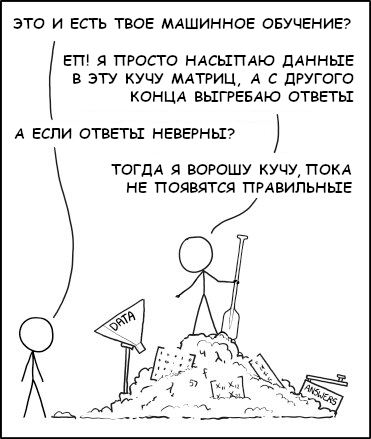Соседние области

Разделы ML

Обучение с учителем
Обучение с подкреплением
Обучение без учителя
выбор алгоритма (scikit)

выбор алгоритма (dlib)

NN
neural networksОсновы
Нейронная сеть
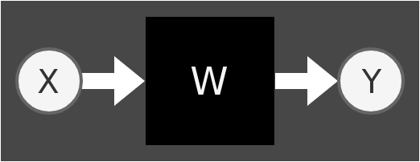- Нейронная сеть это некий "черный ящик", мат-модель, имеющая вход и выход
- Внутренне состоянии модели описывается параметрами $W$
- На вход модели подаются данные $X$
- На выходе получаем ответ $Y$
Совсем Немного математики
линейнoe уравнение
$$ \begin{split} y & = w_0 + w_1 x_1 \\ y & = w_0 + w_1 x_1 + w_2 x_2 \\ & \cdots \\ y & = w_0 + w_1 х_1 + w_2 х_2 + \cdots + w_n x_n \\ \end{split} $$
вектор
$$ \vec{w}=[w_0,w_1,\cdots, w_n] $$
матрица
$$ W_{n \times m} = \begin{bmatrix} w_{0,0} & w_{0,1} & \cdots & w_{0,m} \\ w_{1,0} & w_{1,1} & \cdots & w_{1,m} \\ \cdots & \cdots & \cdots & \cdots \\ w_{n,0} & w_{n,1} & \cdots & w_{n,m} \end{bmatrix}$$
Матрицы обычно обозначаются заглавными буквами $X$, a их элементы строчными $x_{i,j}$матрицы можно умножать
$A \cdot B = C$
- ширина матрицы $A$ должна быть равна высоте матрицы $B$
- результатом умножения будет новая матрица
Геометрический смысл
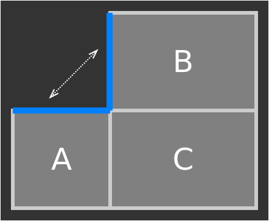Математический смысл
$$ W_{1 \times n} = [w_0, w_1, \cdots, w_n] \\ X_{1 \times n} = [x_0, x_1, \cdots, x_n] \\ W \cdot X^T = [w_0 x_0 + w_1 x_1 + \cdots + w_n x_n]_{1 \times 1} $$
ВЫДЫХАЕМ
этого вполне достаточно чтобы разобраться с нейронными сетями
Нейрон
1943 год
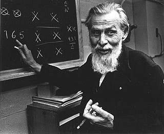Мат-модель нейронной связи была предложена 75 лет назад
Уорреном Мак-Каллоком
Модель нейрона
 \begin{align*}
\large y &= f(\vec x \cdot \vec w) \\
\large &= f(w_0 + x_1 w_1 + x_2 w_2 + \dots +x_n w_n)
\end{align*}
\begin{align*}
\large y &= f(\vec x \cdot \vec w) \\
\large &= f(w_0 + x_1 w_1 + x_2 w_2 + \dots +x_n w_n)
\end{align*}
нейрон с одним входом

$$y = f(w_0 + w_1 x_1)$$
В случае если на входе модели только одна переменная $x$, мы получаем простейшую линейную модель. Этого уже достаточно, чтобы аппроксимировать некое линейное расспределение данных.
подбор параметров $w_0,w_1$
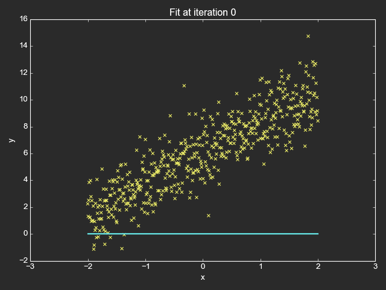нейрон с двумя входами

$$y = f(w_0 + w_1 x_1 + w_2 x_2)$$
Если на входе две переменные $x$, мы получаем уже уравнение плоскости
Аппроксимация плоскостью

с тремя входами и выше
 p $$ y = f(w_0 + x_1 w_1 + x_2 w_2 + \dots +x_n w_n)$$
p.
Mы по прежнему получаем линейное уравнения, гиперплоскости, представить и
изобразить которых довольно сложно, т.к. мы существа трехмерные
p $$ y = f(w_0 + x_1 w_1 + x_2 w_2 + \dots +x_n w_n)$$
p.
Mы по прежнему получаем линейное уравнения, гиперплоскости, представить и
изобразить которых довольно сложно, т.к. мы существа трехмерные
Всё вокруг кривое
На свете нет ничего одинакового. Все распределяется по гауссиане. Этот старый дурак не сообразил, что существует дисперсия свойств…A. и Б. Стругацкие, "Понедельник начинается в субботу"
Функции Активации

ВЖУХ И ВСЁ КРИВОЕ
Relu
$$y=max(0,x)$$

Данная функция отсекает все отрицательные значения на выходе нейрона. Используется во внутренних слоях.
Sigmoid
$$ y = \frac{1}{1+e^{-x}}$$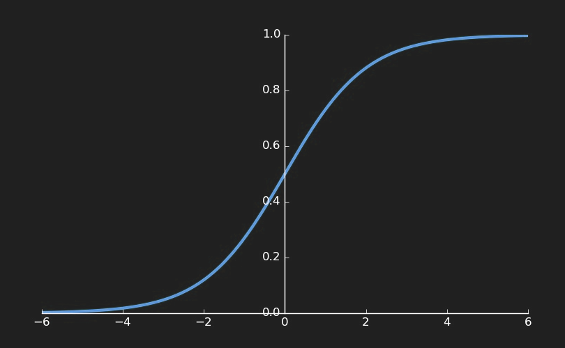Используется при бинарной классификации
Linear
$$y = x$$
Дает обычную линейную регрессию
Softmax
$$y_i = \frac{e^{x_i}}{\sum_j e^{x_j}}$$ Когда классов больше двух, данная функция дает итоговую вероятность каждого класса
Когда классов больше двух, данная функция дает итоговую вероятность каждого классаПрочий зоопарк

Джунгли

НЕЙРОННАЯ СЕТЬ
Если один нейрон уже может аппрокисмировать данные гиперплоскостью
Что же смогут несколько?
берём два нейрона
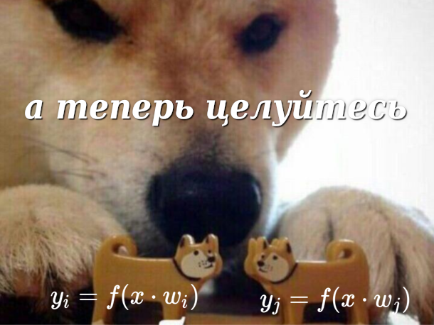Хотя, чего мелочится
Берем тысячу нейронов
И намазываем их слоями друг на друга
Как-то так
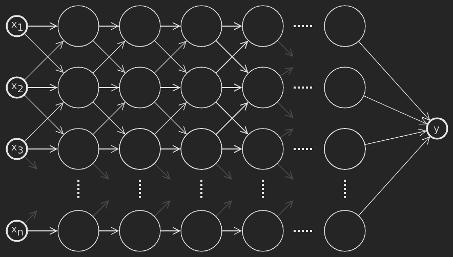Зачем?
- Приблизительно так устроен живой мозг
- Чем больше нейронов, тем модель "умнее"
(но это не точно)
Пример с яблоком
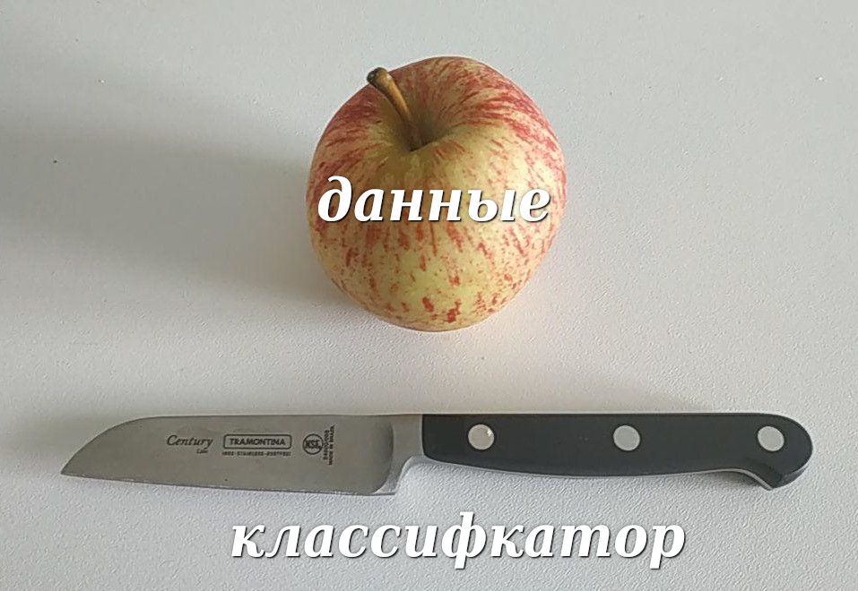Представьте, что ваши данные это яблоко, а Нож - классификатор, который может разрезать яблоко на две частиОдин нейрон
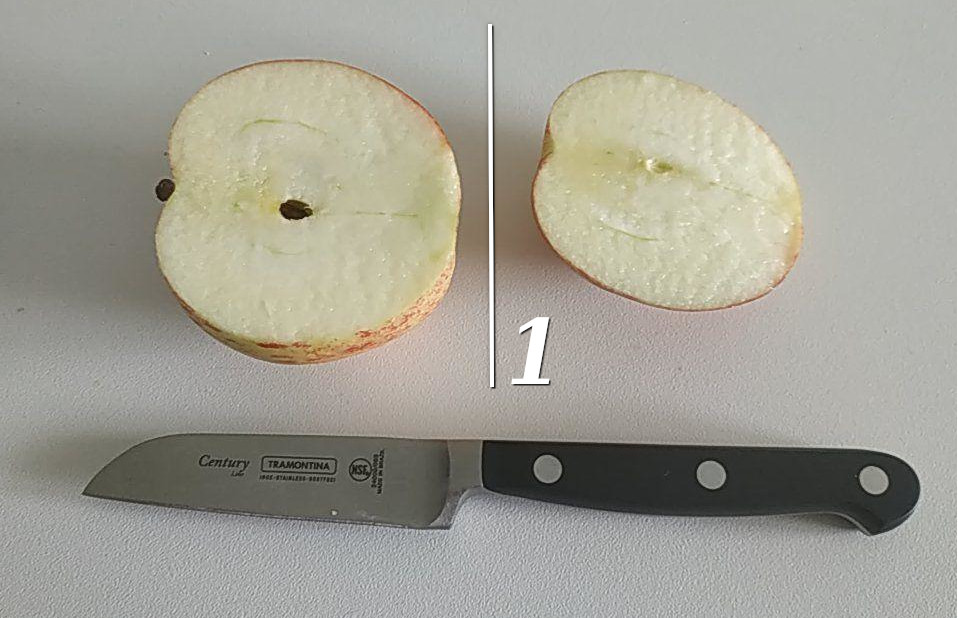Один нейрон позволяет разрезать яблоко-данные на две частиДва нейрона
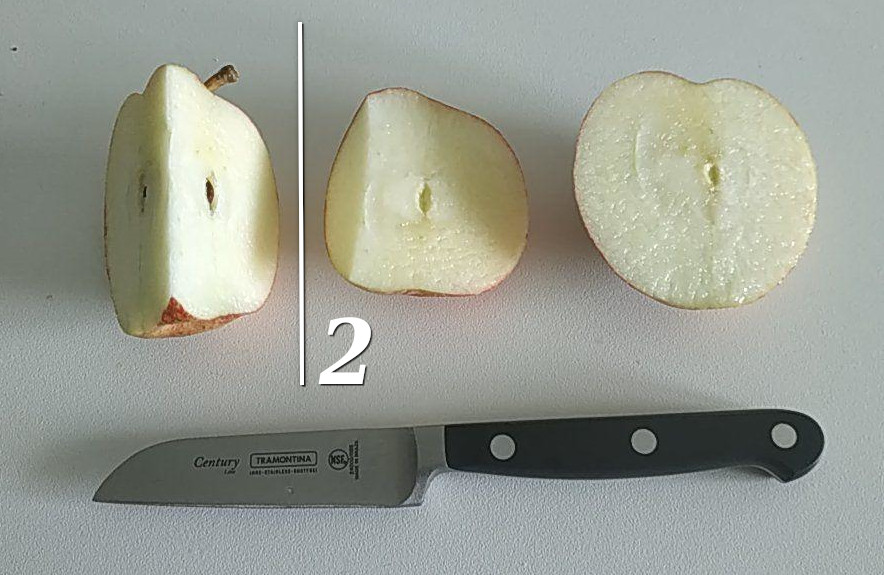Два нейрона позволяет разрезать яблоко на три частиТри нейрона
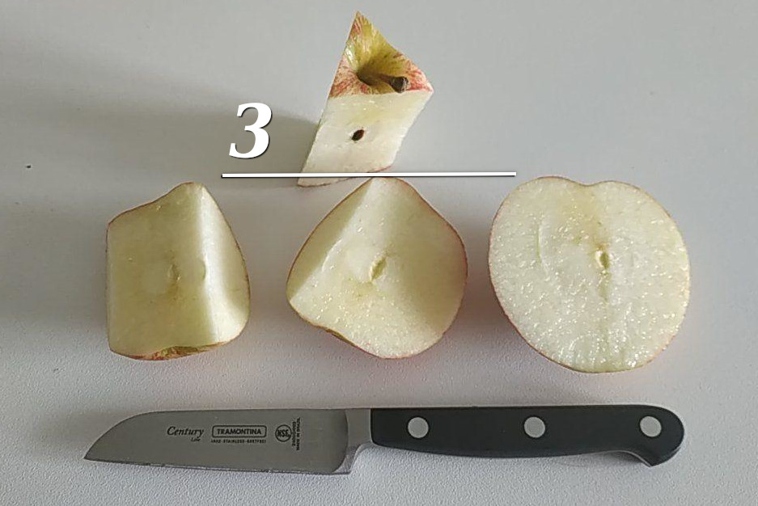Три нейрона позволяют нам вырезрать из аблока сердцивину целиком100500 нейронов
способны аппрокисмировать что угодно
Живой пример
ОБУЧЕНИЕ NN
Обучение NN
Обучени нейронной сети, заключается в подборе таких параметров модели $W$, при которых ошибка на выходе будет минимальна
Ключевые темы
- Loss function
функция потерь
"Как измерить точность?" - Gradient descent
градиентные спуск
"Как повысить точность?" - Backpropagation
обратное распространение ошибки
"Как повысить точность NN?"
Loss function
- Результат работы любой мат-модели неточен
- Точность модели расчитывается с помощью функции потерь
- Задача обучения сводится к минимизации данной функции
- Типов ункций несколько, выбор конкретной определяется решаемой задачей
- Функции отличаются скоростью работы и точностью
Gradient descent
Градиeнтный спуск, это метод численного поиска минимума целевой функции.

- Существует несколько популярных алгоритмов
- Самая популярная стратегия Adam
- Менее популярные АдаGrad, AdaDelta
- Другие стратегии: sgd, mb-gd, momentum, nag, rmsprop
Backpropagation
Oбратное распространение ошибки - модификация градиентного спуска применительно к нейронным сетям